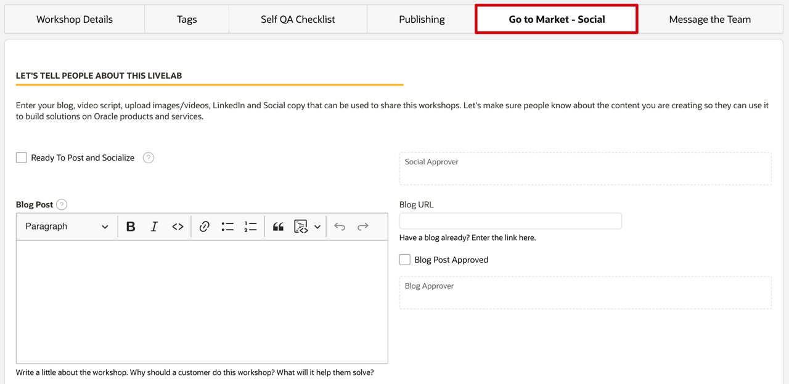
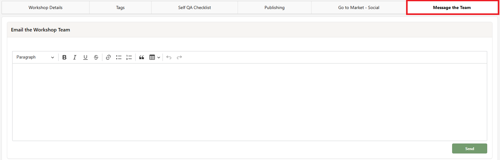

Step 1 / Submit Workshop Request
Submit Workshop Request
Start in WMS
Submit the request before development starts
- Connect to Corporate VPN, open Oracle Workshop Management System. Open WMS Requires Oracle VPN and WMS access.
- Click Submit a New Workshop Request. Complete Workshop Basic Information thoroughly. Follow the field placeholders, open the ? tooltips for detail, or use the Prompt examples generator below, then copy each result into its matching WMS field.


- Open Tags and set the required tag groups before you click Create: one Level, at least one Role, at least one Focus Area, and at least one Product.

- Use Go to Market - Social while the workshop is still early if blog, social, video script, or promotional media details will be needed later in the publish flow.

- Wait for council review after submission. Council review normally takes 2 to 3 business days; if nothing changes after 3 business days, use Message the Team or find council contacts under People & Role Reports > Workshop Council Members.

Prompt examples
Draft WMS fields from your workshop idea
Generating example fields...
Status flow
Understand the WMS status path before you build
The graph below is the process map. Use these WMS states to understand when to wait for review, when to begin development, when to complete Quality Assurance, and when the workshop moves into publication and later maintenance.
Before you move on
What you should know before moving on
- The title, abstract, outline, and prerequisites tell a reviewer exactly what the workshop will accomplish.
- Stakeholder, council, owner group, and required tags are already correct in WMS.
- Check the WMS status before starting development. If the request is still in council review, wait for feedback or approval; begin development only after the initial WMS review gate clears.
- You understand that later Self Quality Assurance, stakeholder review, and Quarterly Quality Assurance all reuse this same WMS record.
Watch for
Common first-step mistakes
- Writing a vague abstract that forces the council to ask for more information.
- Starting content development before the request is aligned with the real workshop idea.
- Leaving tags, stakeholder ownership, or later publish requirements until the end of the flow.